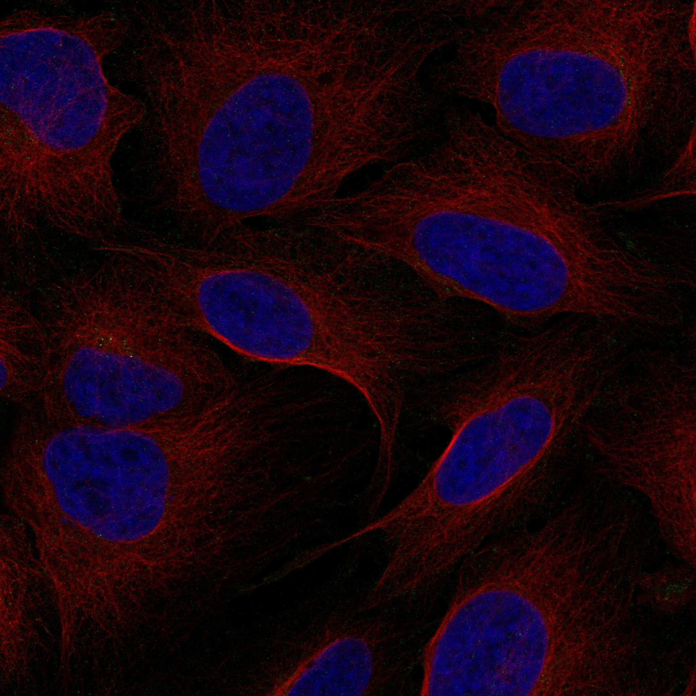

type: protein-evaluation gene: "DMXL2" date: 2026-06-03 tags: [protein-scout, rejected, evaluation] status: rejected ---
DMXL2 — REJECTED (核定位证据不足 (核定位得分 2/10 ≤ 3))
1. 基本信息
| 项目 | 内容 |
|---|---|
| 基因名 / 别名 | DMXL2 / KIAA0856 |
| 蛋白名称 | DmX-like protein 2 |
| 蛋白大小 | 3036 aa / 339.6 kDa |
| UniProt ID | Q8TDJ6 |
| 评估日期 | 2026-06-03 |
IF 图像: 
2. 评分总览
| 维度 | 得分 | 满分 | 加权后 | 关键证据摘要 |
|---|---|---|---|---|
| 🔴 核定位特异性 | 2/10 | ×4 | 8 | HPA: Vesicles; 额外: Cytosol; UniProt: Cytoplasmic vesicle, secretory vesicle, synaptic vesicle mem |
| 📏 蛋白大小 | 0/10 | ×1 | 0 | 3036 aa / 339.6 kDa |
| 🆕 研究新颖性 | 8/10 | ×5 | 40 | PubMed strict=35 篇 (≤40→8) |
| 🏗️ 三维结构 | 6/10 | ×3 | 18 | AlphaFold v6 pLDDT=63.4; PDB: 无 |
| 🧬 调控结构域 | 7/10 | ×2 | 14 | InterPro: IPR052208, IPR022033, IPR015943, IPR036322, IPR001 |
| 🔗 PPI 网络 | 3/10 | ×3 | 9 | STRING 15 partners; IntAct 0 interactions |
| ➕ 互证加分 | — | max +3 | 0.5 | PDB+AF+STRING+IntAct cross-validation |
| 原始总分 | 89.5/180 | |||
| 归一化总分 | 49.7/100 |
3. 详细分析
3.1 核定位证据
| 来源 | 定位 | 可信度 |
|---|---|---|
| Protein Atlas (IF) | Vesicles; 额外: Cytosol | Supported |
| UniProt | Cytoplasmic vesicle, secretory vesicle, synaptic vesicle membrane; Cytoplasmic v... | Swiss-Prot/TrEMBL |
IF 图像获取: IF图像已下载并嵌入 (1张)
GO Cellular Component:
- extracellular space (GO:0005615)
- neuronal dense core vesicle (GO:0098992)
- RAVE complex (GO:0043291)
- synaptic vesicle (GO:0008021)
- synaptic vesicle membrane (GO:0030672)
结论: 核定位证据极弱，主要数据源均不指向细胞核。
3.2 蛋白大小评估
评价: 大小偏离理想范围，实验设计需特殊考虑。
3.3 研究现状
| 指标 | 数值 |
|---|---|
| PubMed strict count | 35 |
| PubMed broad count | 59 |
| 别名(未计入scoring) | Aliases observed but not used for scoring: KIAA0856 |
关键文献: 1. Epileptic encephalopathies and progressive neurodegeneration.. *Revue neurologique*. PMID: 38582661 2. A heterotrimeric protein complex assembles the metazoan V-ATPase upon dissipation of proton gradients.. *Nature structural & molecular biology*. PMID: 40646309 3. Biallelic DMXL2 mutations impair autophagy and cause Ohtahara syndrome with progressive course.. *Brain : a journal of neurology*. PMID: 31688942 4. Downregulation of Dmxl2 disrupts the hearing development in mice.. *Neuroscience*. PMID: 40118164 5. Dual role of DMXL2 in olfactory information transmission and the first wave of spermatogenesis.. *PLoS genetics*. PMID: 30735494
评价: 非常新颖，仅有少数基础研究。
3.4 三维结构分析
| 指标 | 数值 |
|---|---|
| AlphaFold 版本 | v6 |
| AlphaFold 平均 pLDDT | 63.4 |
| 高置信度残基 (pLDDT>90) 占比 | 6.7% |
| 置信残基 (pLDDT 70-90) 占比 | 46.4% |
| 中等置信 (pLDDT 50-70) 占比 | 15.7% |
| 低置信 (pLDDT<50) 占比 | 31.2% |
| 有序区域 (pLDDT>70) 占比 | 53.1% |
| 可用 PDB 条目 | 无 |
PAE: PAE 图像未生成本地文件，结构判断基于 AlphaFold pLDDT 统计。
评价: AlphaFold 预测质量有限（pLDDT=63.4），有序残基占 53.1%。
3.5 结构域分析
| 来源 | 结构域 |
|---|---|
| InterPro/Pfam | InterPro: IPR052208, IPR022033, IPR015943, IPR036322, IPR001680; Pfam: PF12234, PF00400 |
染色质调控潜力分析: 存在已知结构域注释，可作为功能研究的结构基础。
3.6 PPI 网络
STRING 预测互作 (combined score >0.4):
| Partner | Combined Score | Experimental | 功能类别 |
|---|---|---|---|
| WDR7 | 0.992 | 0.688 | — |
| ROGDI | 0.958 | 0.702 | — |
| MADD | 0.937 | 0.000 | — |
| RAB3GAP1 | 0.913 | 0.368 | — |
| RAB3GAP2 | 0.900 | 0.000 | — |
| ATP6V1B2 | 0.834 | 0.762 | — |
| ATP6V1E1 | 0.730 | 0.656 | — |
| ATP6V1H | 0.698 | 0.635 | — |
| ATP6V1G1 | 0.684 | 0.622 | — |
| RAB3A | 0.662 | 0.087 | — |
实验验证互作 (IntAct):
| Partner | 方法 | PMID |
|---|---|---|
| — | — | — |
PPI 互证分析:
- 仅STRING预测
- STRING partners: 15，IntAct interactions: 0
- 调控相关比例: 0 / 15 = 0%
评价: STRING 15 个预测互作，IntAct 0 个实验互作。调控相关配体占比 0%。
3.7 多库互证
| 维度 | 来源 | 结果 | 是否一致 |
|---|---|---|---|
| 三维结构 | AlphaFold pLDDT=63.4 + PDB: 无 | pLDDT=63.4, v6 | 仅预测 |
| 定位 | UniProt + HPA | Cytoplasmic vesicle, secretory vesicle, synaptic v / Vesicles; 额外: Cytosol | 一致 |
| PPI | STRING + IntAct | 15 + 0 interactions | 数据有限 |
互证加分明细:
- 多库定位一致 (3源): +0.5
- STRING + IntAct 双源验证: +0
- 结构域 + AlphaFold 质量: +0
- PDB 多条目覆盖: +0
总分: +0.5 / max +3
4. 总体评价
推荐等级: ⭐⭐ (REJECTED)
核心优势: 1. DMXL2 — DmX-like protein 2，非常新颖，仅有少数基础研究。 2. 蛋白大小3036 aa，大小偏离理想范围，实验设计需特殊考虑。
风险/不确定性: 1. PubMed 35 篇，已有一定研究基础 2. AlphaFold 预测质量一般（pLDDT=63.4），需要更多实验结构验证
下一步建议:
- [ ] 查阅最新关键文献补充研究背景
- [ ] 获取 Protein Atlas IF 图像确认亚细胞定位
- [ ] 设计体外实验验证核定位及潜在调控功能
- [ ] 该蛋白核定位证据不足（≤3/10），不建议作为核蛋白研究目标。
5. 数据来源
- UniProt: https://www.uniprot.org/uniprotkb/Q8TDJ6
- Protein Atlas: https://www.proteinatlas.org/ENSG00000104093-DMXL2/subcellular
- PubMed: https://pubmed.ncbi.nlm.nih.gov/?term=DMXL2
- AlphaFold: https://alphafold.ebi.ac.uk/entry/Q8TDJ6
- STRING: https://string-db.org/network/9606.ENSP00000
- Packet data timestamp: 2026-06-03 12:16:11